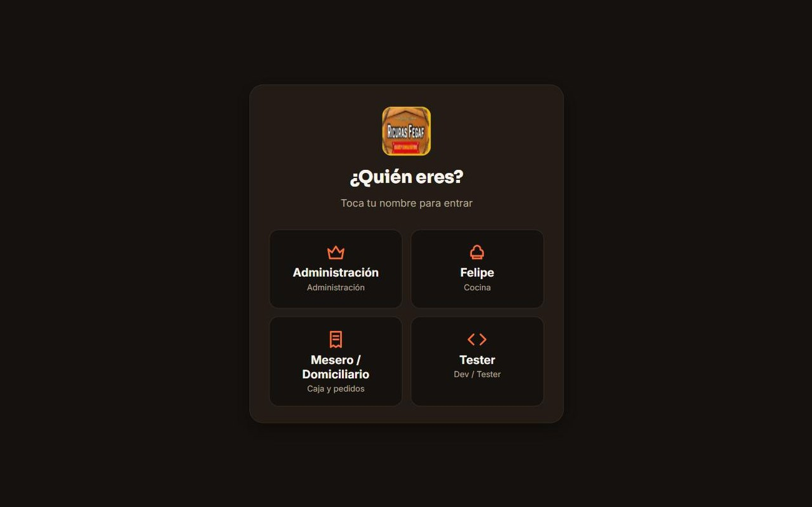

Se acabó el papel entre la mesa y la cocina. Cada orden llega al instante, completa, y al final del día las cuentas ya están hechas.
60–100órdenes al día, en uso diario desde junio de 2026
Código privado del cliente.

El problema
Un restaurante con ocho años de trayectoria, 42 productos y 10 adiciones que funcionaba con cuadernos y Excel. Las órdenes se perdían entre la mesa y la cocina, y las cuentas del día se sacaban a mano.
Lo que construí
Un sistema hecho a la forma de trabajar del restaurante: el mesero toma la orden en el celular, la cocina la ve en pantalla en ese mismo instante y caja cobra con el método que el cliente quiera, incluso dividido.
Detrás hay costeo por receta e insumos, cartera de clientes, arqueo de caja y un panel con la utilidad y lo más vendido. Los dueños cambian precios y tarifas de domicilio sin depender de mí.
Lo que hace
La comanda llega a cocina al instante
Cobro en efectivo, Nequi, datáfono o dividido
Cartera de clientes que quedan debiendo
Arqueo de caja al cierre del día
Costo de cada plato según su receta
Cada empleado entra con su PIN y su rol
Cómo quedó por dentro
Cada tabla protegida con reglas de acceso en la base de datos (RLS)
Las escrituras pasan por funciones que verifican el rol de quien las hace
Los precios se calculan en el servidor, no en el celular del mesero
Pide el PIN otra vez para las acciones delicadas
Cerca de 150 verificaciones automáticas de permisos, precios y caja